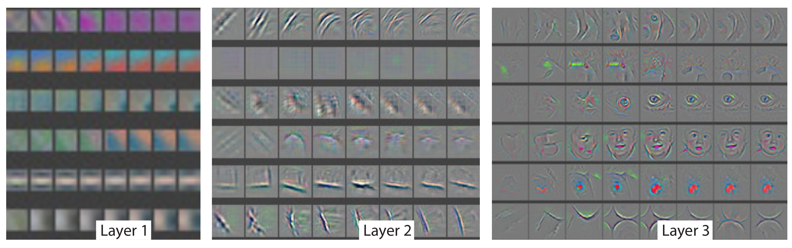

Visualizing & Optimizing Convolutional Neural Nets
ImageNet Classification with Deep Convolutional Neural Networks
, Krizhevsky, Sutskever, & Hinton
Visualizing & Understanding Convolutional Networks
,
ECCV 2014, Matthew Zeiler, Rob Fergus
Going Deeper with Convolutions
,
arXiv:1409.4842, 2014, Christian Szegedy, Wei Liu, Yangqing Jia, et al
Convolutioanl Neural Net Origination
| Hinton (Toronto, Google) | LeCun (Facebook, NYU) |
ImageNet 2012: 1.3M/50k/100k, 1000 categories
16.4% error rate vs. 2nd place 26.1%
Conv Net Architecture


| Matt Zeiler (NYU, Clarifai) | Rob Fergus (NYU) |
"Despite this encouraging progress, there is still little insight into the internal operation and behavior of these complex models, or how they achieve such good performance. From a scientific standpoint, this is deeply unsatisfactory. Without clear understanding of how and why they work, the development of better models is reduced to trial-and-error."

Feature Visualization
"The projections from each layer show the hierarchical nature of the features in the network. Layer 2 responds to corners and other edge/color conjunctions"
Feature Visualization
"Layer 3 has more complex invariances, capturing similar textures (e.g. mesh patterns (Row 1, Col 1); text (R2,C4))"
Feature Visualization

"Layer 4 shows significant variation, and is more class-specific: dog faces (R1,C1); bird’s legs (R4,C2). Layer 5 shows entire objects with significant pose variation, e.g. keyboards (R1,C11) and dogs (R4)"
Layer Evolution
 Epochs 1, 2, 5, 10, 20, 30, 40, 64Layer Evolution
Epochs 1, 2, 5, 10, 20, 30, 40, 64Occlusion
Ablation
"For both datasets, a steady improvement can be seen as we ascend the model, with best results being obtained by using all layers. This supports the premise that as the feature hierarchies become deeper, they learn increasingly powerful features."
Generalized Feature Detector
Christian Szegedy, Wei Liu, Yangqing Jia, et al
Codenamed: Inception

"Our GoogLeNet submission to ILSVRC 2014 actually uses 12× fewer parameters than the winning architecture of Krizhevsky et al [9] from two years ago, while being significantly more accurate"
Motivation
Provable Bounds for Learning Some Deep Representations
.
Sanjeev Arora, Aditya Bhaskara, Rong Ge, and Tengyu Ma. CoRR, abs/1310.6343, 2013.
"Their main result states that if the probability distribution of the data-set is representable by a large, very sparse deep neural network, then the optimal network topology can be constructed layer by layer by analyzing the correlation statistics of the activations of the last layer and clustering neurons with highly correlated outputs"
Neurons that fire together, wire together
-Hebbian principle
Efficiency
"Our GoogLeNet submission to ILSVRC 2014 actually uses 12× fewer parameters than the winning architecture of Krizhevsky et al [9] from two years ago, while being significantly more accurate"